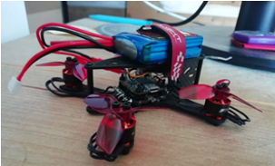

voordat ik deze studie koos was ik al veel met computers bezig. ik had al ervaring met programmeren en vond dit leuk om te doen, daarom ben ik gaan kijken naar studies in de ICT. ik heb uiteindelijk de studie bij de HZ gekozen omdat voor mijn gevoel hier het meeste in de praktijk wordt gedaan.

een project waarmee ik bezig ben geweest op de middelbare school
Ik ben begonnen met programmeren omdat ik het interesant vond om de verschillende problemen op te lossen met computers. dat is nog steeds de reden dat ik elke dat met computers bezig ben. En ook de reden waarom ik hoop er mijn werk van te kunnen maken.